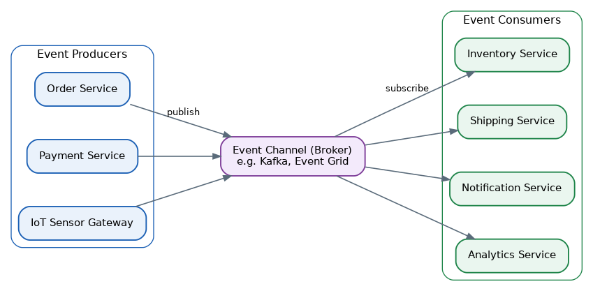
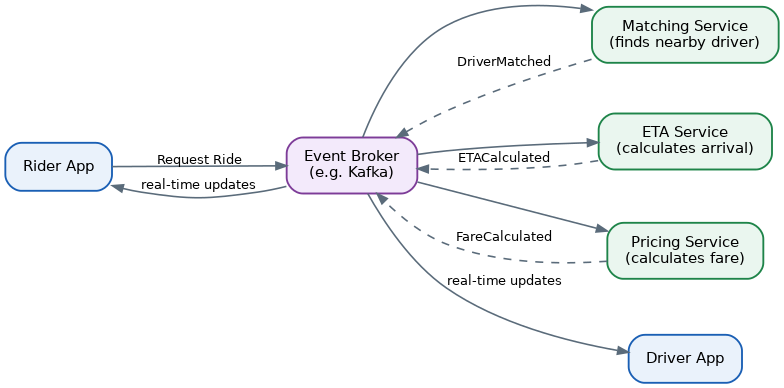

Event-Driven Architecture Pattern
Table of Contents
- Overview
- The Problem: Managing Complex Interactions in Distributed Systems
- Event-Driven Architecture: A Promising Solution
- The Architecture
- The Inner Workings
- An Example: Placing an Order
- Performance Implications and Special Considerations
- Use Cases and System Design Examples
- Conclusion
- Common Interview Questions
- Key Takeaways
Overview
An event is just a record that something happened: a customer placed an order, a sensor's reading crossed a threshold, a payment cleared. Event-Driven Architecture (EDA) designs a system around the flow of these events instead of around services calling each other directly. Three roles make this work: producers create and announce events, consumers listen for events and react to them, and an event channel (also called a broker) carries events from producers to consumers. Crucially, a producer never needs to know who — if anyone — is listening.
This is a real departure from the traditional model, where Service A calls Service B directly and blocks waiting for a reply. In an event-driven system, Service A simply announces "Order Placed" to the channel and moves on with its own work; it has no idea, and no need to know, which services react or how many of them there are. That's why EDA is so popular in microservices: it naturally produces loose coupling, lets each piece scale independently, and lets teams bolt on new functionality later without ever touching the code that raised the original event.
The Problem: Managing Complex Interactions in Distributed Systems
The alternative to events is direct, synchronous calls — Service A calls Service B and waits for the answer before continuing. At small scale this is fine, but as a system grows into many microservices, these direct calls multiply into a tangled web of point-to-point connections. Every time a new service needs to know about something happening elsewhere — say, a new service needs to hear about orders being placed — someone has to track down every place that creates an order and wire in yet another outbound call.
That tight coupling causes concrete damage. If Service B is slow or down and Service A is synchronously waiting on it, Service A gets stuck too, and that stall can cascade to whatever is calling Service A, and to whatever calls that — a single weak link can freeze a whole chain. It also makes scaling lopsided: if one link in the chain (say, sending confirmation emails) becomes a bottleneck, a tightly-coupled sequence of direct calls makes it awkward to scale just that one piece, and it's hard to bolt on a brand-new consumer of an event — like a new fraud-detection check — without reaching back into the original caller's code. Finally, this call-and-wait style simply isn't built for high-volume, near-real-time streams of activity, like thousands of IoT sensor readings arriving every second.
Event-Driven Architecture: A Promising Solution
EDA attacks these problems by decoupling producers from consumers with asynchronous events — "asynchronous" meaning the producer fires the event and immediately continues its own work rather than waiting for consumers to finish. Because producers have no idea who's subscribed, a brand-new consumer can be added for an existing event without changing a single line of the producer's code: want real-time fraud detection on checkout? Just have a new Fraud Service subscribe to the existing OrderPlaced event — nothing else in the system has to change.
This design also naturally supports near-real-time processing, since events are delivered the moment they happen rather than requiring anyone to poll for updates, and because each consumer processes independently, individual parts of the system can scale up or down according to their own load rather than being chained to the pace of one synchronous sequence. The trade-off — explored more below — is that this flexibility costs immediate consistency: because everything happens asynchronously, there's a brief window where different parts of the system hold slightly different, "not yet caught up" pictures of the world. This is eventual consistency.
The Architecture
Structurally, an event-driven system has producers on one side, an event channel (broker) in the middle, and one or more consumers on the other. Events typically move through the channel via one of two delivery models: publish-subscribe, where the broker tracks subscribers and pushes each event to everyone interested but keeps no permanent record (so anyone who joins late misses earlier events), or event streaming, where events are appended to a durable, ordered log that consumers can read at their own pace, including replaying older events when needed.
Two topologies describe the overall shape of how events flow. A broker topology has no central coordinator — components simply broadcast events and anyone interested picks them up. It's highly decoupled and flexible, but nobody "owns" the state of a multi-step process, so complex business flows are harder to track and recover if something goes wrong partway through. A mediator topology introduces a central event mediator that tracks state and manages a multi-step process, dispatching commands to specific channels instead of broadcasting to everyone. That buys more control and consistency, but reintroduces some coupling, and the mediator itself now has to be highly reliable.

The Inner Workings
Once an event lands in the channel, what happens next depends on how sophisticated the consumer needs to be. The simplest case is simple event processing: one event triggers one action, and a small function wakes up, runs, and finishes. A step up is basic event correlation, where a consumer ties together a handful of related events using some shared identifier and remembers information from earlier events to make sense of a later one — the same foundation patterns like Saga build on. Beyond that is complex event processing, where a consumer analyzes a whole window of events over time to spot a pattern, such as noticing a device's average temperature has crept upward over the last ten minutes. The most demanding tier is event stream processing, where a dedicated streaming platform continuously ingests a high-volume flow of events and feeds it to one or more stream processors — especially common in IoT and analytics-heavy workloads.
Every event carries a payload describing what happened, and architects generally pick one of two payload styles: put everything a consumer might need directly into the event (simple for consumers, but the payload can bloat and create versioning headaches over time), or put just a handful of key identifiers into the event and let the consumer fetch full details from the source when needed (keeps events small and consistent, at the cost of an extra lookup call). Because most consumers run multiple instances so no single instance becomes a bottleneck or single point of failure, systems also have to plan explicitly for ordering and duplicate-processing issues — commonly by stamping a shared correlation ID on every related event so logs and traces across services can be stitched back into one end-to-end story.
An Example: Placing an Order
Tracing what happens when a customer places an order in an event-driven e-commerce system shows the pattern end to end:
- The Order Service receives the request, saves the new order, and publishes an
OrderPlacedevent to the channel, carrying the order ID, items, and customer ID. - The Inventory Service, subscribed to
OrderPlaced, receives the event and reduces stock for each item, then publishes anInventoryUpdatedevent. - The Payment Service, also subscribed to
OrderPlaced, processes the payment and publishes eitherPaymentSucceededorPaymentFailed. - The Shipping Service, subscribed to both
InventoryUpdatedandPaymentSucceeded, waits until it has seen both, then schedules the shipment. - The Notification Service, subscribed to several of these events, sends the customer an order confirmation email as soon as
PaymentSucceededarrives.
Notice that the Order Service never directly calls Inventory, Payment, Shipping, or Notification — it only announces what happened, and each interested service figures out its own reaction. If the business later wants a new Fraud Detection Service that also reacts to OrderPlaced, it simply subscribes; nothing about the Order Service changes.
Performance Implications and Special Considerations
Because producers and consumers are decoupled and asynchronous, the system as a whole is eventually consistent rather than instantly consistent — there's a short window after an event is published where some consumers haven't processed it yet, so different parts of the system may briefly disagree about the current state. Designs need to account for this explicitly; a UI, for instance, might need to show "processing…" rather than assume a write is instantly reflected everywhere.
Ordering and duplicate delivery are real, everyday concerns. If a consumer runs multiple instances for scalability, events can be processed out of order unless the system is carefully designed to preserve sequence for related events, and consumers need to be idempotent (safe to process the same event twice) since messages are occasionally redelivered after retries. Guaranteed delivery matters just as much, especially for critical business events: if a consumer crashes mid-processing, the event must not simply vanish — a common approach is to hold onto an event until the consumer explicitly acknowledges successful processing.
Observability is harder here than in a simple request-response system, since one business action can ripple through many independently-running services with no single component seeing the whole picture. Stamping a correlation ID on every related event lets logging and tracing tools reconstruct the full journey of one business transaction — essential for debugging. Error handling typically leans on dead-letter queues (a holding area for events that repeatedly fail to process, so a human can investigate later) and sometimes compensating transactions (see the Saga pattern) to logically undo a multi-step process that failed partway through. Teams also need a plan for event schema evolution, since producers and consumers deploy independently and can't always change in lockstep — event formats have to evolve in a backward-compatible way.
Use Cases and System Design Examples
Event-driven architecture shows up heavily wherever many independent parts need to react to the same real-world happening in near real time:
- Ride-sharing platforms (like Uber): requesting a ride fires a
RideRequestedevent that simultaneously triggers a matching service (find a nearby driver), an ETA service (estimate arrival), and a pricing service (calculate the fare) — all reacting independently to the same event. - E-commerce order processing (companies like Walmart and Shopify lean on streaming platforms such as Apache Kafka): a single
OrderPlacedevent fans out to inventory, shipping, notifications, and analytics without those services being directly wired together. - IoT and smart devices: sensors continuously stream readings as events, and downstream services watch for patterns — like a temperature spike — to trigger alerts or automated actions.

The messaging and streaming infrastructure that makes all of this possible — brokers, queues, and pub/sub systems like Kafka — is covered in more depth in the System Design — Building Units: Messaging & Streaming section, alongside patterns like Saga and CQRS that frequently sit right next to EDA in real architectures.
Conclusion
Event-Driven Architecture reshapes how services talk to each other: instead of direct, synchronous calls, services announce what happened and let interested parties react on their own schedule. That buys real benefits — loose coupling, easier independent scaling, and the ability to add new functionality without touching existing services. The cost is added complexity: eventual consistency instead of instant consistency, the need for idempotent and order-aware consumers, and a genuine investment in observability (correlation IDs, tracing, dead-letter queues) so a team can actually understand what's happening across a system where no single component sees the whole picture. Used well — often alongside patterns like Saga, Event Sourcing, and CQRS — EDA is one of the most powerful tools for building large, scalable, real-time distributed systems; used carelessly, without planning for its trade-offs, it can turn debugging into a genuine challenge, so it's best reserved for systems that truly need the scalability and decoupling it provides.